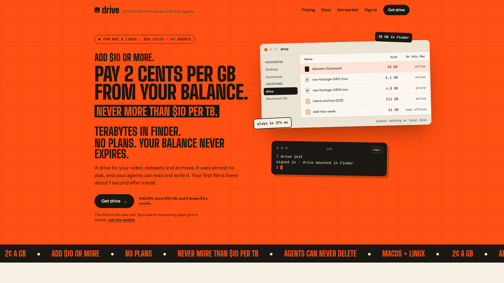
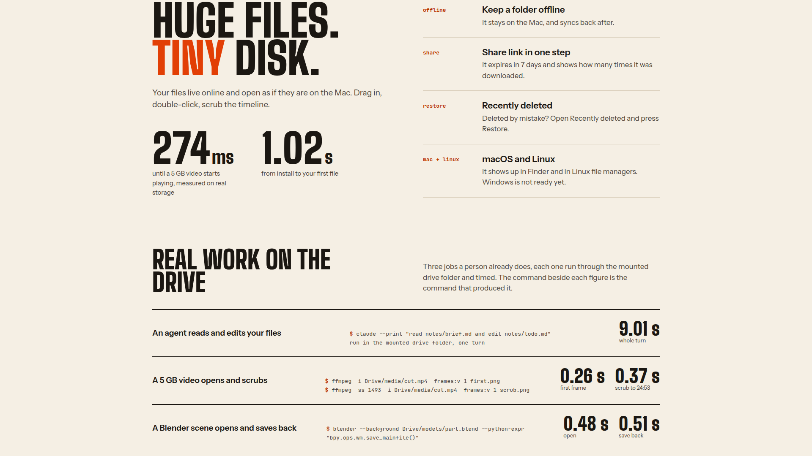
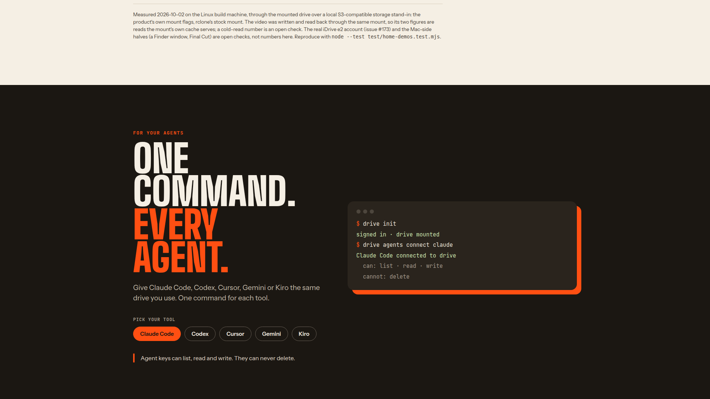
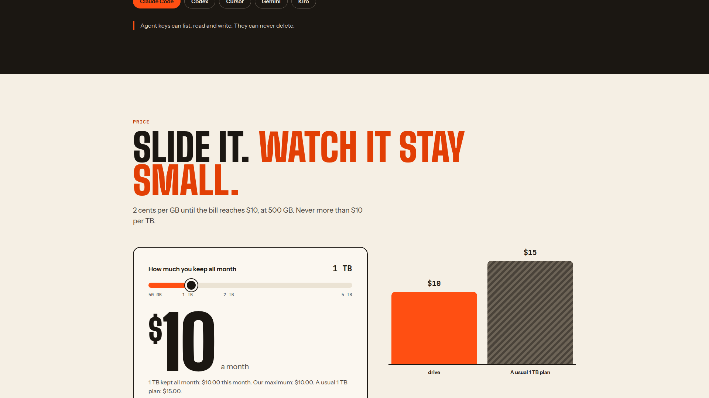
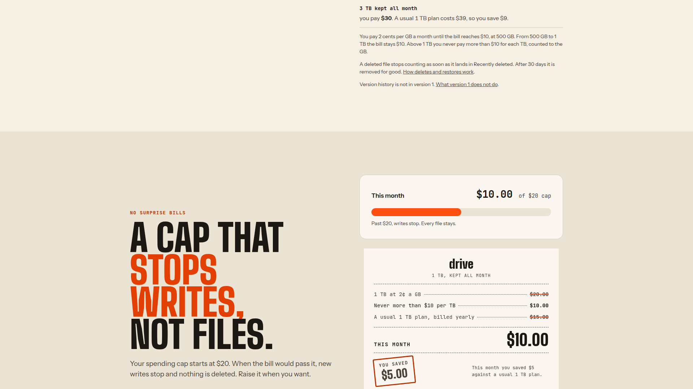

drive
drive
FOR PEOPLE AND THEIR AGENTS
A drive that holds more than your laptop.
Plain files in object storage, opened by the apps you already use.

THE DRIVE
Plain files, opened by the apps you already use.

HUGE FILES
A 5 GB video starts without a 5 GB download.

EVERY AGENT
Agent keys can list, read and write. They can never delete.

ONE PRICE
2¢ per GB a month. Never more than $15 per TB.

THE CAP
At the cap, writes stop. Every file stays.
drive
Get drive.
The drive is not open yet. Sign-ups go to the waitlist.
Join the waitlist on the drive site.